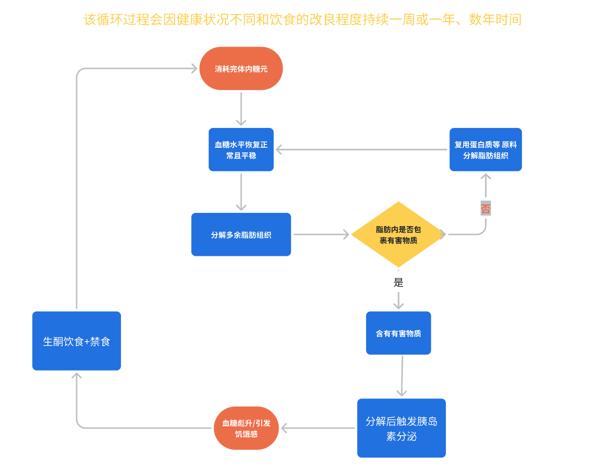

大修仙养生--youmoula.com
友情链接
Amazon.com
Manning
Wiley
Springer
CRC Press
Apress
首页
生酮饮食
八大营养素与人体自我修复
--修仙养生
1.
人体的三大能量来源：蛋白质、脂肪类、
糖类
（泛指所有
碳水化合物
）
a.
日常习惯性主食：米、面、五谷、豆类及其制品主要是
糖类
能量供给。
i.
糖类
分为葡萄糖和果糖两种形式，葡萄糖不用必须通过肝脏转换才被吸收，果糖必须通过肝脏转换才被吸收。
b.
日常生产中的白糖、红糖（黄糖）、蔗糖、麦芽糖一半葡萄糖一半果糖。
2.
糖尿病分一型和二型，一型主要是遗传导致，暂不讨论；二型糖尿病是慢性的，有一个转换过程，过程是
糖类
能量摄取太多，导致身体不知道如何处理。
a.
身体不知道如何处理过多
糖类
能量的现象一开始被称为“
胰岛素
阻抗
”，有关胰岛素阻抗的解释：
b.
https://mp.weixin.qq.com/s?src=11×tamp=1690928427&ver=4687&signature=WVH4fCJqhylAUB1l8bJHzn6MjPV4aoioMwzgXcNNnyOeCddFpHYxSkKE5GLOS2mrdG077bhHTIsHGXCIGQqmtWj4w4LsSZ2hLyJG31lFCLQszmb9Ls*Ufh2bYIAL-UXP&new=1
3.
很多人都有胰腺灵敏度降低和
胰岛素
阻抗
的
亚健康
状况，胰岛素阻抗持续一段时期并且严重到一定的医学标准后就被称为糖尿病。
4.
要调整糖尿病就是调理身体的
胰岛素
阻抗
现象，让胰腺灵敏度恢复正常（糖尿病药物就是单纯提高胰腺灵敏度，但是没有解决身体内糖分过多和日后不断过多的状况）。
5.
通过日常饮食能量类型的调整就可以调理
胰岛素
阻抗
现象，做法就是要把
糖类
主食换成蛋白质和脂肪类主食（例如经典的
地中海饮食
方式）。
6.
肠道菌群
：人体大概有5000多种100万亿菌，每个人体内的菌群种类都是不一样的。菌群的状态和活动影响人的大脑、情绪、身体状态等。人体可以看成是生物综合协作体，
糖类
会促使坏菌过多影响菌类平衡，补充
膳食纤维
（小肠菌群食物）、酸菜（乳酸菌）、芝士（保加利亚杆菌）、橄榄油利于菌类保持平衡。
7.
最好采用生酮饮食+禁食（168或123饮食法）。
https://calculo.io/keto-calculator
这个是生酮饮食日常需要补充能量的计算，单位是国外单位）
生酮饮食不但能恢复和校准人体的正常机能，还能优化人的大脑、改善精力、提高注意力、提升记忆力、提升认知和提升情绪。
生酮饮食大概介绍：
https://mp.weixin.qq.com/s?src=11×tamp=1690931985&ver=4687&signature=t6nCttP6grSbfEzqnpvfulxd6vGaDcaCty9ih0qtFTBUmMQh9UICMPBXIailOIMv9Z2hEDzOqjoiEnbTWHdg9SzdYukL5wq0DSrJmcvoHvkJxVLkqQRkvrw40Gz8HCqv&new=1
例如 体重60KG，每天要补充1300卡(
Kcal
)热量：
168饮食法：每天24小时里面集中在8小时内吃够一天需要的热量： 500g鱼肉（500*20%=100g蛋白质)*4(每克蛋白质4Kcal热量)+100g椰子油（可以做成油泼辣子吃油）*9（每克脂肪9Kcal热量）=400+900 = 1300
Kcal
这样就够了一天的能量，然后剩余的16小里不吃东西刺激胰腺，身体就会启动
自噬
机制来清理和修复身体。（16小时以上不吃东西开启自噬功能是诺贝尔奖的研究成果）
同样的123就是1小时内吃够全天的热量，剩余23小时来清理和修复身体。

© youmoula.com All Rights Reserved